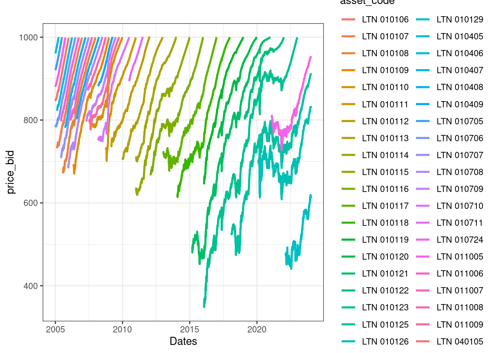
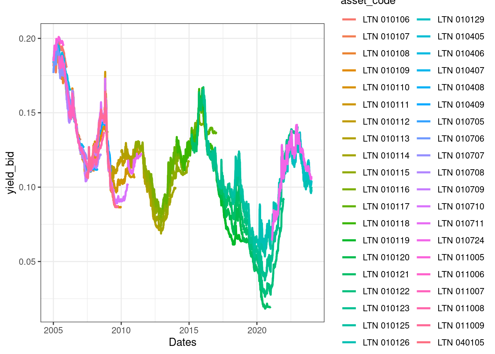
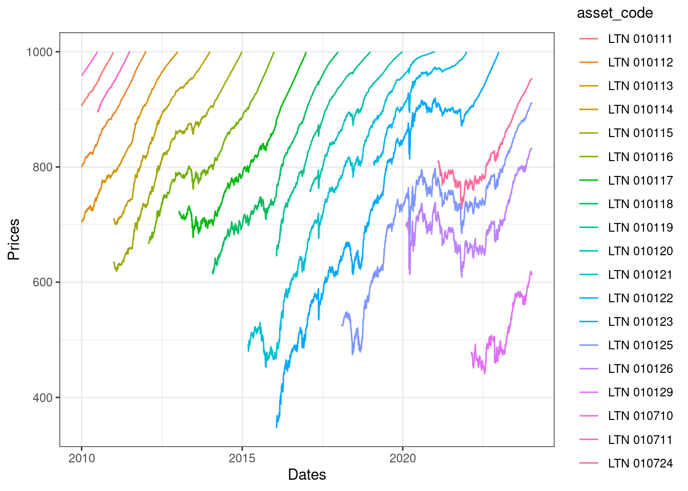
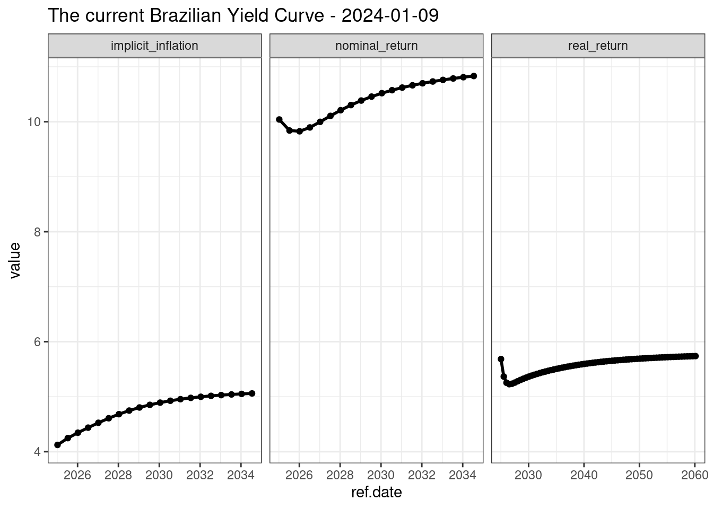
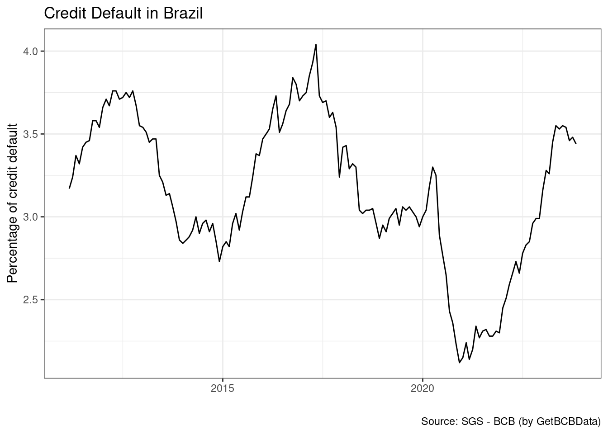
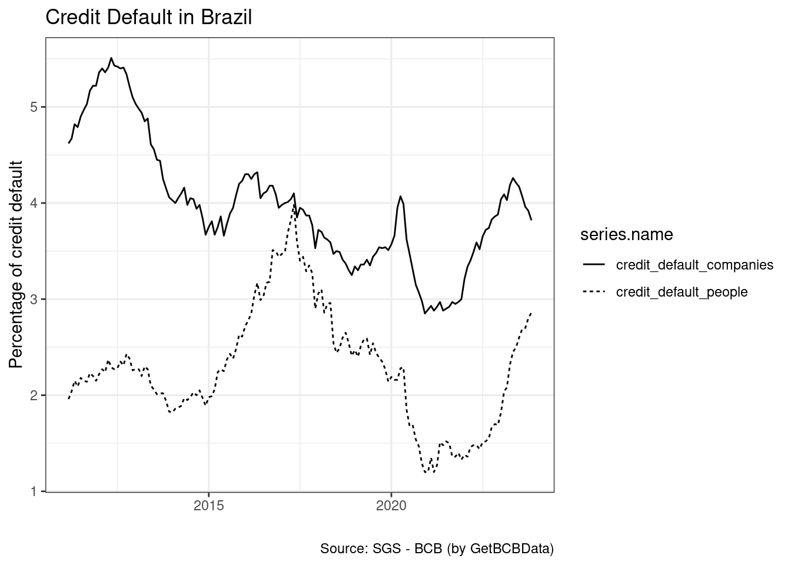

Uma das grandes vantagens de se utilizar o R é a quantidade de dados que podem ser importados através da internet. Isso é especialmente prático pois uma base de dados pode ser atualizada através de um simples comando, evitando o tedioso trabalho de coleta manual. Ao usarmos pacotes para importar dados, esta etapa da pesquisa se torna reproduzível e mais rápida, facilitando o compartilhamento e futura execução do nosso código.
Neste capítulo vou descrever e dar exemplos de importação de dados para os mais importantes e estáveis pacotes especializados na importação de para dados financeiros e econômicos no Brasil e exterior. A lista inclui:
Importa dados do sistema DFP – Demonstrativos Financeiros Padronizados – de empresas negociadas na B3, a bolsa Brasileira. O repositório inclui documentos financeiros tal como o balanço patrimonial, demonstrativos de resultados, entre vários outros.
Importa dados do sistema FRE – Formulário de Referência – da bolsa Brasileira. Esta inclui diversos eventos e informações corporativas tal como composição do conselho e diretoria, remuneração dos conselheiros, entre outras.
Pacote {yfR}(M. Perlin 2023b) faz a comunicação do R com os dados financeiros disponíveis no Yahoo Finance. Essa gigantesca base de dados inclui valores agregados de preços e volumes negociados de ações na B3 e outras bolsas internacionais na frequência diária. Tudo que se precisa saber para acessar a base de dados são os identificadores das ações (tickers) e um período de tempo.
Limpeza e organização: todos os dados financeiros de diferentes tickers são mantidos no mesmo dataframe, facilitando a análise futura com as ferramentas do {tidyverse}(Wickham 2023).
Controle de erros de importação: todos erros de download são registrados na saída do programa. Caso uma ação em particular não exista no Yahoo Finance, esta será ignorada e apenas as demais disponíveis serão retornadas na saída do código;
Comparação de datas a um benchmark: os dados de ativos individuais são comparados com dados disponíveis para um ativo benchmark, geralmente um índice de mercado. Caso o número de datas faltantes seja maior que um determinado limite imposto pelo usuário, a ação é retirada do dataframe final.
Uso de sistema de cache: no momento de acesso aos dados, os mesmos são salvos localmente no computador do usuário e são persistentes para cada sessão. Caso o usuário requisitar os mesmos dados na mesma sessão do R, o sistema de cache será utilizado. Se os dados desejados não estão disponíveis no cache, a função irá comparar e baixar apenas as informações que faltam. Isso aumenta significativamente a velocidade de acesso aos dados, ao mesmo tempo em que minimiza o uso da conexão a Internet;
Importante
Desde versão 2.6 (2020-11-22) de {yfR}(M. Perlin 2023b) a pasta default de cache do {yfR}(M. Perlin 2023b) se localiza no diretório temporário da sessão do R. Assim, o cache é persistente apenas para a sessão do usuário. Esta mudança foi motivada por quebras estruturais nos dados do Yahoo Finance, onde os dados passados registrados em cache não mais estavam corretos devido a eventos coporativos. O usuário, porém, pode trocar a pasta de cache usando a entrada cache.folder.
Acesso a tickers em índices de mercado: O pacote inclui funções para baixar a composição dos índices Ibovespa, SP500 e FTSE100. Isso facilita a importação de dados para uma grande quantidade de ações. Podes, por exemplo, baixar cotações de todas as ações que fazem parte de certo índice.
Processamento paralelo: Caso o usuário estiver baixando um grande volume de dados do Yahoo Finance, uma opção para execução paralela está disponível. Isto é, ao invés de usar apenas um núcleo na requisição dos dados, usamos vários ao mesmo tempo. O efeito prático é, dependendo do número de núcleos do computador, uma diminuição significativa no tempo total de importação.
Flexibilidade de formato: O pacote também oferece funções para modificar o formato dos dados. Caso o usuário deseje uma saída do dataframe no formato largo, onde tickers são colunas e as linhas os preços/retornos, basta chamar função BatchGetSymbols::reshape.wide. Da mesma forma, uma transformação temporal também é possível. Se o usuário desejar dados na frequência semanal, mensal ou anual, basta indicar na entrada freq.data da função.
Como exemplo de uso, vamos baixar dados financeiros referentes a quatro ações no último ano (360 dias) usando a função de mesmo nome do pacote. Os tickers de cada ação podem ser encontrados nos próprios sites do Yahoo Finance. Note que adicionamos texto .SA a cada um deles. Essa é uma notação específica do site e vale para qualquer ação Brasileira.
Na chamada da função {yfR}(M. Perlin 2023b), utilizamos um valor de 0.95 (95%) para o inputthresh.bad.data e '^BVSP' para bench.ticker. Isso faz com que a função compare as datas obtidas para cada ativo em relação ao nosso benchmark, o índice Ibovespa, cujo ticker no Yahoo Finance é ^BVSP. Se, durante o processo de importação, uma ação individual não apresenta mais de 95% de casos válidos em relação ao benchmark, esta é retirada da saída.
library(BatchGetSymbols)library(dplyr)# set tickersmy_tickers <-c('PETR4.SA', 'CIEL3.SA','GGBR4.SA', 'GOAU4.SA')# set dates and other inputsfirst_date <-Sys.Date()-360last_date <-Sys.Date()thresh_bad_data <-0.95# sets percent threshold for bad databench_ticker <-'^BVSP'# set benchmark as ibovespal_out <-BatchGetSymbols(tickers = my_tickers,first.date = first_date,last.date = last_date,bench.ticker = bench_ticker,thresh.bad.data = thresh_bad_data)
R> Warning: `BatchGetSymbols()` was deprecated in BatchGetSymbols
R> 2.6.4.
R> ℹ Please use `yfR::yf_get()` instead.
R> ℹ 2022-05-01: Package BatchGetSymbols will soon be replaced
R> by yfR. More details about the change is available at
R> github <<www.github.com/msperlin/yfR> You can install yfR
R> by executing:
R>
R> remotes::install_github('msperlin/yfR')
A saída de {yfR}(M. Perlin 2023b) é um objeto do tipo lista, ainda não visto no livro. Por enquanto, tudo que precisas saber é que uma lista é um objeto flexível, acomodando outros objetos em sua composição. O acesso a cada elemento de uma lista pode ser feito pelo operador $. No capítulo @ref(classe-estrutura) iremos estudar melhor esta classe de objetos.
Importante
Note que as entradas da função BatchGetSymbols::BatchGetSymbols usam o “.” em seus nomes, tal como thresh.bad.data, e bench.ticker, enquanto o livro está escrito usando o traço baixo (_), tal como thresh_bad_data, e bench_ticker. Esta diferença pode resultar em problemas se, na falta de atenção, o usuário trocar um pelo outro. Como regra, procure dar prioridade para o uso de traço baixo nos nomes de objetos. Infelizmente algumas funções escritas no passado acabaram ficando com a estrutura antiga e, para não prejudicar os usuários, os nomes das entradas foram mantidos.
Voltando ao nosso exemplo, função {yfR}(M. Perlin 2023b) retorna uma lista com dois elementos: um dataframe com o resultado do processo de importação – df_control – e outro dataframe com os dados das ações – df_tickers. Vamos checar o conteúdo do primeiro dataframe.
# print result of download processprint(l_out$df.control)
R> # A tibble: 4 × 6
R> ticker src download.status total.obs
R> <chr> <chr> <chr> <int>
R> 1 PETR4.SA yahoo OK 244
R> 2 CIEL3.SA yahoo OK 244
R> 3 GGBR4.SA yahoo OK 244
R> 4 GOAU4.SA yahoo OK 244
R> # ℹ 2 more variables: perc.benchmark.dates <dbl>,
R> # threshold.decision <chr>
Objeto df.control mostra que todos tickers foram válidos, com um total de 244 observações para cada ativo. Note que as datas batem 100% com o Ibovespa (coluna perc.benchmark.dates).
Quanto aos dados financeiros, esses estão contidos em l_out$df.tickers:
Como esperado, a informação sobre preços, retornos e volumes está lá, com as devidas classes de colunas: dbl (double) para valores numéricos e date para as datas. Observe que uma coluna chamada ticker também está incluída. Essa indica em que linhas da tabela os dados de uma ação começam e terminam. Mais tarde, no capítulo @ref(limpando-estruturando), usaremos essa coluna para fazer diversos cálculos para cada ação.
7.1.1 Baixando Dados da Composição do Ibovespa
Outra função útil do pacote é BatchGetSymbols::GetIbovStocks, a qual importa a composição atual do índice Ibovespa diretamente do site da B3. Esse índice é um termômetro do mercado local e as ações que o compõem são selecionadas devido sua alta negociabilidade. Portanto, sequenciando o uso de GetIbovStocks e {yfR}(M. Perlin 2023b), podemos facilmente baixar uma volumosa quantidade de dados de ações para o mercado Brasileiro. Considere o seguinte fragmento de código, onde realizamos essa operação:
library(BatchGetSymbols)# set tickersdf_ibov <-GetIbovStocks()my_tickers <-paste0(df_ibov$tickers,'.SA')# set dates and other inputsfirst_date <-Sys.Date()-30last_date <-Sys.Date()thresh_bad_data <-0.95# sets percent threshold for bad databench_ticker <-'^BVSP'# set benchmark as ibovespacache_folder <-'data/BGS_Cache'# set folder for cachel_out <-BatchGetSymbols(tickers = my_tickers,first.date = first_date,last.date = last_date,bench.ticker = bench_ticker,thresh.bad.data = thresh_bad_data,cache.folder = cache_folder)
Note que utilizamos a função paste0() para adicionar o texto '.SA' para cada ticker em df_ibov$tickers. A saída do código anterior não foi mostrada para não encher páginas e páginas com as mensagens do processamento. Destaco que, caso necessário, poderíamos facilmente exportar os dados em l_out para um arquivo .rds e futuramente carregá-los localmente para realizar algum tipo de análise.
Cuidado
Saiba que os preços do Yahoo Finance não são ajustados a dividendos. O ajuste realizado pelo sistema é apenas para desdobramentos das ações. Isso significa que, ao olhar séries de preços em um longo período, existe um viés de retorno para baixo. Ao comparar com outro software que faça o ajustamento dos preços por dividendos, verás uma grande diferença na rentabilidade total das ações. Como regra, em uma pesquisa formal, evite usar dados de ações individuais no Yahoo Finance para períodos longos. A excessão é para índices financeiros, tal como o Ibovespa, onde os dados do Yahoo Finance são bastante confiáveis uma vez que índices não sofrem os mesmos ajustamentos que ações individuais.
Arquivos com informações sobre preços e retornos de títulos emitidos pelo governo brasileiro podem ser baixados manualmente no site do Tesouro Nacional. O tesouro direto é um tipo especial de mercado onde pessoa física pode comprar e vender dívida pública. Os contratos de dívida vendidos na plataforma são bastante populares devido a atratividade das taxas de retorno e a alta liquidez oferecida ao investidor comum.
Pacote {GetTDData}(M. Perlin 2023a) importa os dados das planilhas em Excel do site do Tesouro Nacional e os organiza. O resultado é um dataframe com dados empilhados. Como exemplo, vamos baixar dados de um título prefixado do tipo LTN com vencimento em 2021-01-01. Esse é o tipo de contrato de dívida mais simples que o governo brasileiro emite, não pagando nenhum cupom1 durante sua validade e, na data de vencimento, retorna 1.000 R$ ao comprador. Para baixar os dados da internet, basta usar o código a seguir:
library(GetTDData)asset_codes <-'LTN'# Identifier of assetsmaturity <-'010121'# Maturity date as string (ddmmyy)# download and read filesdf_TD <-td_get(asset_codes)
R>
R> ── Downloading TD files
R> ℹ Downloading LTN_2005.xls
R> ✔ '/tmp/Rtmp5tTg1S/td-files/LTN/LTN_2005.xls' is found, with size 252.9 kB.
R> ℹ Downloading LTN_2006.xls
R> ✔ '/tmp/Rtmp5tTg1S/td-files/LTN/LTN_2006.xls' is found, with size 288.8 kB.
R> ℹ Downloading LTN_2007.xls
R> ✔ '/tmp/Rtmp5tTg1S/td-files/LTN/LTN_2007.xls' is found, with size 260.1 kB.
R> ℹ Downloading LTN_2008.xls
R> ✔ '/tmp/Rtmp5tTg1S/td-files/LTN/LTN_2008.xls' is found, with size 259.6 kB.
R> ℹ Downloading LTN_2009.xls
R> ✔ '/tmp/Rtmp5tTg1S/td-files/LTN/LTN_2009.xls' is found, with size 191.0 kB.
R> ℹ Downloading LTN_2010.xls
R> ✔ '/tmp/Rtmp5tTg1S/td-files/LTN/LTN_2010.xls' is found, with size 148.5 kB.
R> ℹ Downloading LTN_2011.xls
R> ✔ '/tmp/Rtmp5tTg1S/td-files/LTN/LTN_2011.xls' is found, with size 161.8 kB.
R> ℹ Downloading LTN_2012.xls
R> ✔ '/tmp/Rtmp5tTg1S/td-files/LTN/LTN_2012.xls' is found, with size 144.9 kB.
R> ℹ Downloading LTN_2013.xls
R> ✔ '/tmp/Rtmp5tTg1S/td-files/LTN/LTN_2013.xls' is found, with size 147.5 kB.
R> ℹ Downloading LTN_2014.xls
R> ✔ '/tmp/Rtmp5tTg1S/td-files/LTN/LTN_2014.xls' is found, with size 147.5 kB.
R> ℹ Downloading LTN_2015.xls
R> ✔ '/tmp/Rtmp5tTg1S/td-files/LTN/LTN_2015.xls' is found, with size 142.3 kB.
R> ℹ Downloading LTN_2016.xls
R> ✔ '/tmp/Rtmp5tTg1S/td-files/LTN/LTN_2016.xls' is found, with size 176.1 kB.
R> ℹ Downloading LTN_2017.xls
R> ✔ '/tmp/Rtmp5tTg1S/td-files/LTN/LTN_2017.xls' is found, with size 174.6 kB.
R> ℹ Downloading LTN_2018.xls
R> ✔ '/tmp/Rtmp5tTg1S/td-files/LTN/LTN_2018.xls' is found, with size 174.6 kB.
R> ℹ Downloading LTN_2019.xls
R> ✔ '/tmp/Rtmp5tTg1S/td-files/LTN/LTN_2019.xls' is found, with size 177.2 kB.
R> ℹ Downloading LTN_2020.xls
R> ✔ '/tmp/Rtmp5tTg1S/td-files/LTN/LTN_2020.xls' is found, with size 176.1 kB.
R> ℹ Downloading LTN_2021.xls
R> ✔ '/tmp/Rtmp5tTg1S/td-files/LTN/LTN_2021.xls' is found, with size 175.1 kB.
R> ℹ Downloading LTN_2022.xls
R> ✔ '/tmp/Rtmp5tTg1S/td-files/LTN/LTN_2022.xls' is found, with size 175.6 kB.
R> ℹ Downloading LTN_2023.xls
R> ✔ '/tmp/Rtmp5tTg1S/td-files/LTN/LTN_2023.xls' is found, with size 146.9 kB.
R> ℹ Downloading LTN_2024.xls
R> ✔ '/tmp/Rtmp5tTg1S/td-files/LTN/LTN_2024.xls' is found, with size 20.5 kB.
Temos informações sobre data de referência (ref.date), retorno contratado (yield.bid), preço do contrato na data (price.bid), nome do contrato (asset.code) e dia de maturidade (matur.date). No gráfico a seguir checamos os dados:
R> Warning: Using `size` aesthetic for lines was deprecated in ggplot2
R> 3.4.0.
R> ℹ Please use `linewidth` instead.

Como esperado de um título de dívida pré-fixado, os preços possuem uma tendência positiva ao longo do tempo, chegando ao valor esperado de 1000 R$ no vencimento em 2021-01-01. Podemos também visualizar as mudanças do yield do título:

Os retornos do título tiveram forte queda ao longo dos anos. Este resultado é esperado pois o juros do mercado – taxa SELIC – caiu bastante nos últimos cinco anos.
As funções do {GetTDData}(M. Perlin 2023a) também funcionam com vários argumentos como asset.codes e maturity. Suponhamos que desejamos visualizar todos os preços de todos os prazos disponíveis para títulos do tipo LTN a partir de 2010. Tudo o que precisamos fazer é adicionar o valor NULL ao argumento maturity e filtrar as datas:
library(GetTDData)asset_codes <-'LTN'# Name of assetmaturity <-NULL# = NULL, downloads all maturities# download datadf_TD <-td_get(asset_codes)
R>
R> ── Downloading TD files
R> ℹ Downloading LTN_2005.xls
R> ✔ Found file in folder, skipping it.
R> ℹ Downloading LTN_2006.xls
R> ✔ Found file in folder, skipping it.
R> ℹ Downloading LTN_2007.xls
R> ✔ Found file in folder, skipping it.
R> ℹ Downloading LTN_2008.xls
R> ✔ Found file in folder, skipping it.
R> ℹ Downloading LTN_2009.xls
R> ✔ Found file in folder, skipping it.
R> ℹ Downloading LTN_2010.xls
R> ✔ Found file in folder, skipping it.
R> ℹ Downloading LTN_2011.xls
R> ✔ Found file in folder, skipping it.
R> ℹ Downloading LTN_2012.xls
R> ✔ Found file in folder, skipping it.
R> ℹ Downloading LTN_2013.xls
R> ✔ Found file in folder, skipping it.
R> ℹ Downloading LTN_2014.xls
R> ✔ Found file in folder, skipping it.
R> ℹ Downloading LTN_2015.xls
R> ✔ Found file in folder, skipping it.
R> ℹ Downloading LTN_2016.xls
R> ✔ Found file in folder, skipping it.
R> ℹ Downloading LTN_2017.xls
R> ✔ Found file in folder, skipping it.
R> ℹ Downloading LTN_2018.xls
R> ✔ Found file in folder, skipping it.
R> ℹ Downloading LTN_2019.xls
R> ✔ Found file in folder, skipping it.
R> ℹ Downloading LTN_2020.xls
R> ✔ Found file in folder, skipping it.
R> ℹ Downloading LTN_2021.xls
R> ✔ Found file in folder, skipping it.
R> ℹ Downloading LTN_2022.xls
R> ✔ Found file in folder, skipping it.
R> ℹ Downloading LTN_2023.xls
R> ✔ Found file in folder, skipping it.
R> ℹ Downloading LTN_2024.xls
R> ✔ '/tmp/Rtmp5tTg1S/td-files/LTN/LTN_2024.xls' is found, with size 20.5 kB.
# remove data prior to 2010df_TD <- dplyr::filter(df_TD, ref_date >=as.Date('2010-01-01'))
Após a importação das informações, plotamos os preços dos diferentes ativos:

Note como todos contratos do tipo LTN terminam com valor R$ 1.000 em sua data de expiração e possuem uma dinâmica linear de crescimento de preço ao longo do tempo.
Outra funcionalidade do pacote {GetTDData}(M. Perlin 2023a) é o acesso a curva de juros atual do sistema financeiro brasileiro diretamente do site da Anbima. Para isso, basta utilizar a função get.yield.curve:
library(GetTDData)# get yield curvedf_yield <-get.yield.curve()# check resultdplyr::glimpse(df_yield)
Os dados incluem a curva de juros nominal, juros real e da inflação. Para melhor visualizar as informações, vamos plotá-las em um gráfico:

A curva de juros é uma ferramente utilizada no mercado financeiro com o propósito de representar graficamente a expectatica do mercado sobre juros futuro. Baseada nos preços dos títulos públicos, calcula-se e extrapola-se o juros implícito para cada período futuro. Uma curva ascendente, o formato esperado, indica que é mais caro (maior o juro) tomar dinheiro emprestado no longo prazo.
O Banco Central Brasileiro (BCB) disponibiliza em seu Sistema de Séries Temporais (SGS) uma vasta quantidade de tabelas relativas a economia do Brasil. Mais importante, estas tabelas são atualizadas constantemente e o acesso é gratuito e sem necessidade de registro.
Como um exemplo, vamos usar o pacote para estudar a inadimplência de crédito no sistema financeiro Brasileiro. O primeiro passo no uso de {GetBCBData}(M. Perlin 2022) é procurar o símbolo da série de interesse. Acessando o sistema de séries temporais do BCB, vemos que o código identificador para o percentual total de inandimplência no Brasil é 21082.
No código, basta indicar a série de interesse e o período de tempo desejado:
library(GetBCBData)library(dplyr)# set ids and datesid_series <-c(perc_default =21082)first_date ='2010-01-01'# get series from bcbdf_cred <-gbcbd_get_series(id = id_series,first.date = first_date,last.date =Sys.Date(), use.memoise =FALSE)
R>
R> Fetching perc_default [21082] from BCB-SGS from Online API
R> Found 153 observations
Note que indicamos o nome da coluna na própria definição da entrada id. Assim, coluna series.name toma o nome de perc.default. Esta configuração é importante pois irá diferenciar os dados no caso da importação de diversas séries diferentes. O gráfico apresentado a seguir mostra o valor da série no tempo:

Como podemos ver, a percentagem de inadimplência aumentou a partir de 2015. Para ter uma idéia mais clara do problema, vamos incluir no gráfico a percentagem para pessoa física e pessoa jurídica. Olhando novamente o sistema do BCB, vemos que o símbolos de interesse são 21083 e 21084, respectivamente. O próximo código baixa os dados das duas séries.
# set idsid.series <-c(credit_default_people =21083,credit_default_companies =21084)first.date ='2010-01-01'# get series from bcbdf_cred <-gbcbd_get_series(id = id.series,first.date = first.date,last.date =Sys.Date(), use.memoise =FALSE)
R>
R> Fetching credit_default_people [21083] from BCB-SGS from Online API
R> Found 153 observations
R> Fetching credit_default_companies [21084] from BCB-SGS from Online API
R> Found 153 observations
A diferença na saída do código anterior é que agora temos duas séries temporais empilhadas no mesmo dataframe. Partimos então para a visualização das séries

Como podemos ver, a inadimplência de crédito para pessoa física aumentou muito mais do que a para pessoa jurídica (empresas) nos últimos anos. Poderiámos, facilmente, integrar o código anterior para uma análise mais completa dos dados em algum problema de pesquisa.
Importante
O sistema BCB-SGS é local obrigatório para qualquer economista sério. A quantidade e variedade de dados é imensa. Podes usar os dados do sistema para automatizar qualquer tipo de relatório econômico.
Pacote {GetDFPData2}(M. Perlin and Kirch 2023)(M. Perlin and Kirch 2023) é uma evolução do pacote GetDFPData(R-GetDFPData?) e fornece uma interface aberta para todas as demonstrações financeiras distribuídas pela B3 e pela CVM nos sistemas DFP (dados anuais) e ITR (dados trimestrais). Ele não só faz o download dos dados, mas também ajusta à inflação e torna as tabelas prontas para pesquisa dentro de um formato tabular. Os diferenciais do pacote em relação a outros distribuidores de dados comerciais são: livre acesso, facilidade para baixar dados em larga escala e a variedade de dados disponíveis.
Importante
Dados históricos completos e atualizados a partir de 2010 do DFP e ITR estão disponibilizados na seção Data do meu site pessoal. Estes dados são atualizados anualmente.
O ponto de partida no uso de {GetDFPData2}(M. Perlin and Kirch 2023) é baixar informações atuais sobre empresas disponíveis. O acesso a tabela é possível com a função get_info_companies:
library(GetDFPData2)# get info for companies in B3df_info <-get_info_companies()
Essa tabela disponibiliza os identificadores numéricos das empresas, setores de atividades, atual segmento de governança, tickers negociados na bolsa e situação atual (ativa ou não). O número atual de empresas ativas e inativas, a partir de 2024-01-10, está disponível na coluna SIT_REG. Observa-se 781 empresas ativas e 1811 canceladas. Essa é uma excelente fonte de informação para um estudo exploratório. Pode-se facilmente filtrar empresas para datas, setores, tickers ou segmentos de governança corporativa.
Toda empresa no banco de dados é identificada pelo seu número único da CVM. Função search_company permite que o usuário procure o identificador de uma empresa através de seu nome. Dado um texto de entrada – o nome da empresa –, a função procurará uma correspondência parcial com os nomes de todas as empresas disponíveis no banco de dados. Em seu uso, caracteres latinos e maiúsculas e minúsculas são ignorados. Vamos encontrar o nome oficial nome da Grendene, uma das maiores empresas do Brasil. Para isso, basta usar o comando search_company('grendene').
Vemos que existe um registro para a Grendene: “GRENDENE SA”, com código identificador equivalente a 19615.
Com o identificador da empresa disponível, usamos a função principal do pacote, get_dfp_data, para baixar os dados. Definimos o nome oficial da empresa como entrada companies_cvm_codes e o período de tempo como entradas first_year e last_year.
library(GetDFPData2)library(dplyr)# set optionsid_companies <-19615first_year <-2017last_year <-2018# download datal_dfp <-get_dfp_data(companies_cvm_codes = id_companies,type_docs ='*', # get all docs type_format ='con', # consolidatedfirst_year = first_year,last_year = last_year)
As mensagens de GetDFPData2::get_dfp_data relatam os estágios do processo, desde a aquisição de dados da tabela de referência ao download e leitura dos arquivos da B3. Observe que os arquivos de três sistemas são acessados: DFP (Demostrativos Financeiros Padronizados), FRE (Formulário de Referência) e FCA (Formulário Cadastral). Observe também o uso de um sistema de cache, o qual acelera significativamente o uso do software ao salvar localmente as informações importadas.
Explicando as demais entradas da função GetDFPData2::get_dfp_data:
companies_cvm_codes
Código numérico das empresas (encontrado via GetDFPData2::search_company('ambev'))
type_docs
Símbolo do tipo de documento financeiro a ser retornado. Definições: ’*’ = retorna todos documentos, ‘BPA’ = Ativo, ‘BPP’ = passivo, ‘DRE’ = demonstrativo de resultados do exercício, ‘DFC_MD’ = fluxo de caixa pelo metodo direto, ‘DFC_MI’ = fluxo de caixa pelo metodo indireto, ‘DMPL’ = mutacoes do patrimonio liquido, ‘DVA’ = demonstrativo de valor agregado.
type_format
Tipo de formato dos documentos: consolidado (‘con’) ou individual (‘ind’). Como regra, dê preferência ao tipo consolidado, o qual incluirá dados completos de subsidiárias.
first_year
Primeiro ano para os dados
last_year
Último ano para os dados
O objeto resultante de get_dfp_data é uma lista com diversas tabelas. Vamos dar uma olhada no conteúdo de l_dfp ao buscar os nomes dos itens da lista, limitando o número de caracteres:
stringr::str_sub(names(l_dfp), 1, 40)
R> [1] "DF Consolidado - Balanço Patrimonial Ati"
R> [2] "DF Consolidado - Balanço Patrimonial Pas"
R> [3] "DF Consolidado - Demonstração das Mutaçõ"
R> [4] "DF Consolidado - Demonstração de Valor A"
R> [5] "DF Consolidado - Demonstração do Fluxo d"
R> [6] "DF Consolidado - Demonstração do Resulta"
Como podemos ver, os dados retornados são vastos. Cada item da lista em l_dfp é um tabela indexada ao tempo. A explicação de cada coluna não cabe aqui mas, para fins de exemplo, vamos dar uma olhada no balanço patrimonial da empresa, disponível em l_dfp$"DF Consolidado - Balanço Patrimonial Ativo":
# save assets in dffr_assets <- l_dfp$`DF Consolidado - Balanço Patrimonial Ativo`# check itdplyr::glimpse(fr_assets)
O arquivo Excel resultante conterá cada tabela de l_dpf em uma aba diferente da planilha, com uma truncagem nos nomes. Podemos checar o resultado com função readxl::excel_sheets:
O pacote {GetFREData}(M. Perlin and Kirch 2022) importa dados do sistema FRE – Formulário de Referência – da bolsa Brasileira, incluindo eventos e informações corporativas tal como composição do conselho e diretoria, remuneração dos conselhos, entre outras.
Note que o tempo de execução de get_fre_data é significativo. Isto deve-se ao download e leitura dos arquivos do sistema FRE direto da bolsa. Cada tabela do FRE é importada na lista de saída:
Como podemos ver, para um pesquisador de finanças corporativas, o sistema FRE oferece uma série de informações interessantes. Discutir o conteúdo de cada tabela, porém, vai muito além do propósito dessa seção. Aos interessados, mais detalhes sobre as tabelas do FRE estão disponíveis em (perlin2018accessing?).
Importante
Note que a importação dos dados do FRE inclui uma versão dos arquivos. Toda vez que uma empresa modifica as informações oficiais no sistema da B3, uma nova versão do FRE é criada. Devido a isso, é bastante comum que os dados de um ano para uma empresa possua diferentes versões. Para resolver este problema, o código do {GetFREData}(M. Perlin and Kirch 2022), por default, importa a versão mais antiga para cada ano. Caso o usuário queira mudar, basta utilizar a entrada fre_to_read.
7.6 Outros Pacotes
Nas seções anteriores destacamos os principais pacotes gratuitos para aquisição de dados financeiros e econômicos no Brasil. Muitos desses foram escritos pelo próprio autor do livro e representam uma pequena parcela da totalidade. Não seria justo ignorar o trabalho de outros autores. Assim, reporto abaixo uma seleção de pacotes que vale a pena conhecer:
Pacote construído e mantido pela equipe da FGV. Permite o acesso aos dados do BCB (Banco Central do Brasil) e IBGE (Instituto Brasileiro de Geografia e Estatística). Também inclui ferramentas para a administração, análise e manipulação dos dados em relatórios técnicos.
Pacote para acesso ao projeto simfin, incluindo dados financeiros de diversas empresas internacionais. O acesso livre é restrito a um número de chamadas diárias.
API para o acesso aos dados da Interactive Brokers. Também é necessário uma conta comercial.
No CRAN você encontrará muitos outros. A interface para fontes de dados comerciais também é possível. Várias empresas fornecem APIs para facilitar o envio de dados aos seus clientes. Se a empresa de fornecimento de dados que você usa no trabalho não for apresentada aqui, a lista de pacotes CRAN pode ajudá-lo a encontrar uma alternativa viável.
7.7 Acessando Dados de Páginas na Internet (Webscraping)
Os pacotes destacados anteriormente são muito úteis pois facilitam a importação de dados específicos diretamente da internet. Em muitos casos, porém, os dados de interesse não estão disponíveis via API formal, mas sim em uma página na internet - geralmente no formato de uma tabela. O processo de extrair informações de páginas da internet chama-se webscraping (raspagem de dados). Dependendo da estrutura e da tecnologia da página da web acessada, importar essas informações diretamente para o R pode ser um procedimento trivial – mas também pode se tornar um processo extremamente trabalhoso. Como um exemplo, a seguir vamos raspar dados do Wikipedia sobre a composição do índice SP500.
7.7.1 Raspando Dados do Wikipedia
Em seu site, a Wikipedia oferece uma seção2 com os componentes do Índice SP500. Essas informações são apresentadas em um formato tabular, Figura @ref(fig:SP500-wikipedia).
Imagem da página do Wikipedia
As informações desta página são constantemente atualizadas, e podemos utilizá-las para importar informações sobre as ações pertencentes ao índice SP500. Antes de nos aprofundarmos no código R, precisamos entender como uma página da web funciona. Resumidamente, uma página da web nada mais é do que uma árvore com nódulos, representada por um código HTML (Hypertext Markup Language) extenso interpretado pelo seu navegador. Um valor numérico ou texto apresentado no site geralmente pode ser encontrado dentro do próprio código. Este código tem uma estrutura particular em forma de árvore com ramificações, classes, nomes e identificadores. Além disso, cada elemento de uma página da web possui um endereço, denominado xpath. Nos navegadores Chrome e Firefox, você pode ver o código HTML de uma página da web usando o mouse. Para isto, basta clicar com o botão direito em qualquer parte da página e selecionar View Page Source (ou “Ver Código Fonte”).
A primeira etapa do processo de raspagem de dados é descobrir a localização das informações de que você precisa. No navegador Chrome, você pode fazer isso clicando com o botão direito no local específico do número/texto no site e selecionando inspect. Isso abrirá uma janela extra no navegador a direita. Depois de fazer isso, clique com o botão direito na seleção e escolha copy e copy xpath. Na Figura @ref(fig:SP500-Wikipedia-webscraping), vemos um espelho do que você deve estar vendo em seu navegador.
Este é o endereço do cabeçalho da tabela. Para todo o conteúdo da tabela, incluindo cabeçalho, linhas e colunas, precisamos definir um nível superior da árvore. Isso é equivalente ao endereço //*[@id =" mw-content-text"]/table[1].
Agora que temos a localização do que queremos, vamos carregar o pacote rvest(R-rvest?) e usar as funções read_html, html_nodes ehtml_table para importar a tabela desejada para o R:
library(rvest)# set url and xpathmy_url <-'https://en.wikipedia.org/wiki/List_of_S%26P_500_companies'my_xpath <-'//*[@id="mw-content-text"]/div/table[1]'# get nodes from htmlout_nodes <-html_nodes(read_html(my_url),xpath = my_xpath)# get table from nodes (each element in # list is a table)df_SP500_comp <-html_table(out_nodes)# isolate it df_SP500_comp <- df_SP500_comp[[1]]# change column names (remove space)names(df_SP500_comp) <-make.names(names(df_SP500_comp))# print itglimpse(df_SP500_comp)
O objeto df_SP500_comp contém um espelho dos dados do site da Wikipedia. Os nomes das colunas requerem algum trabalho de limpeza, mas o principal está ali. Observe como a saída é semelhante aos dados da função BatchGetSymbols::GetSP500Stocks. A razão é simples, ambas buscaram a informação na mesma origem. A diferença é que função GetSP500Stocks vai um passo além, limpando os dados importados.
Perlin, Marcelo, and Guilherme Kirch. 2022. GetFREData: Reading FRE Corporate Data of Public Traded Companies from B3. https://github.com/msperlin/GetFREData/.